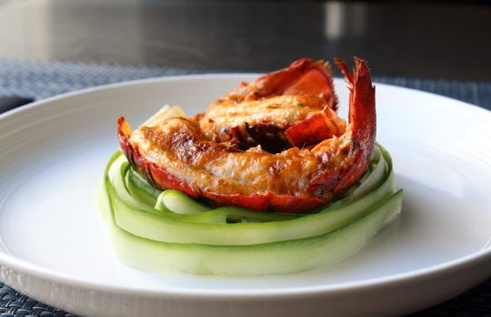

Home
Deviled Lobster Tails

Description
Deviled lobster tails are a luxurious twist on a seafood classic, combining sweet, tender lobster meat with a rich and flavorful stuffing. Blended with buttery breadcrumbs, zesty seasonings, and a hint of spice, the filling enhances the natural sweetness of the lobster while adding a satisfying crunch. Baked to golden perfection, each bite is a perfect balance of indulgence and bold flavor.
Ideal for a special occasion or an elegant dinner, deviled lobster tails offer a gourmet experience with minimal effort. Whether served with a squeeze of fresh lemon or a drizzle of melted butter, this dish is a showstopper that brings a touch of decadence to any meal. Simple to prepare yet undeniably impressive, it's seafood at its finest.
Ingredients
- 1/4 cup mayonnaise
- 2 tablespoons chopped tarragon
- 1 tablespoon sriracha sauce
- 1 teaspoon ground paprika
- 1 teaspoon lemon juice
- 1/4 teaspoon ground cayenne pepper
- 1 pinch salt
- 4 frozen lobster tails - thawed, split in half, and deveined
Steps
- Mix mayonnaise, tarragon, sriracha sauce, paprika, lemon juice, cayenne pepper, and salt together in a bowl.
- Preheat oven to 500 degrees F (260 degrees C). Set oven rack about 8 inches from the heat source and preheat the oven's broiler.
- Loosen lobster meat from the shell, leaving it attached near the tip of the tail. Place tails on a baking sheet lined with crinkled aluminum foil to help keep them in place.
- Spoon some of the mayonnaise mixture beneath the lobster meat and spread a generous amount on top.
- Broil in the preheated oven until lobster tails are browned and cooked through, 5 to 7 minutes.